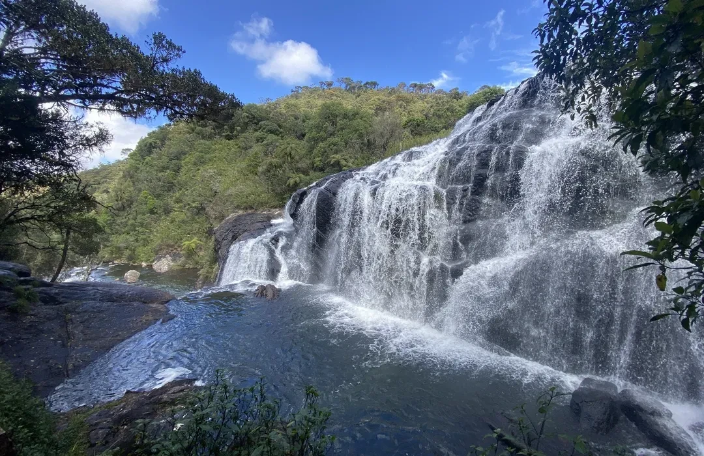
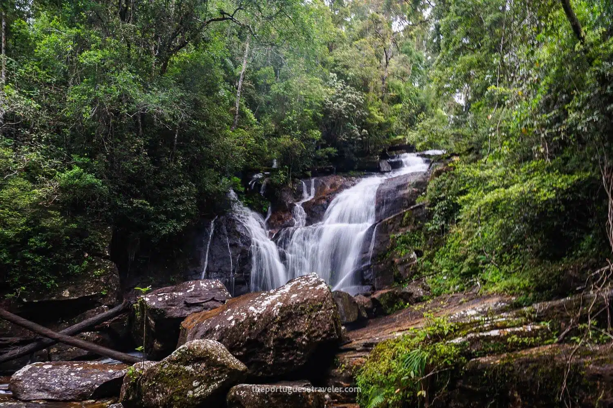
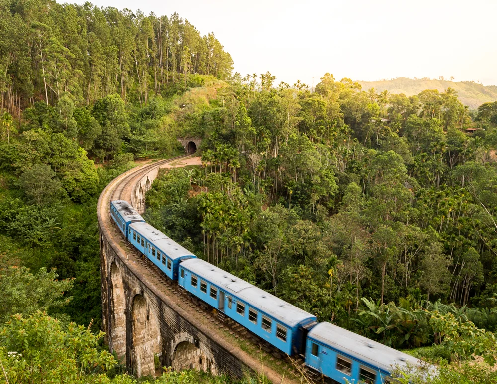

Cascading Waterfalls

Sri Lanka's waterfalls are set in lush forests and misty valleys, offering refreshing escapes after a rainforest hike. From Baker's Falls to Ravana Falls, each cascade brings a unique tropical atmosphere.
What to see
Visit the famous waterfalls of Ella, explore the walkways around the falls, and enjoy nature trails that bring you close to the roaring water and scenic viewpoints.

